🎓
Pontificia Universidad Católica de Chile
Bachelor of Science in Mechanical Engineering (M.S. Equivalent) · 2009 – 2015
I turn raw data into insights
that drive decisions.
Data professional with 3+ years building ETL/ELT pipelines, Power BI dashboards, and ML-driven analytics (anomaly detection, predictive modeling) to integrate multi-source data into reliable, governed, automated reporting systems — backed by 8 years of professional experience that began in mechanical engineering. Skilled at building automated data pipelines, architecting relational databases, and translating complex datasets into executive dashboards. Certified Scrum Master (SMPC) with practical experience in Product Ownership, aligning technical analysis with business and product goals.
Bachelor of Science in Mechanical Engineering (M.S. Equivalent) · 2009 – 2015
Sustainable Energies Diploma · 2017
2025
2023
Santiago, Chile · Jun 2022 – Apr 2025
Built an ML-driven anomaly detection model (Python, SVM), automated ETL/ELT pipelines, and Power BI dashboards for executive reporting; led Agile teams as Scrum Master and owned end-to-end data architecture (Firebase, BigQuery) with data governance practices.
Santiago, Chile · Jan 2021 – Jun 2022
Processed and reconciled millions of high-precision spatial data points into standardized digital models for a conceptual Digital Twin system, ensuring 100% data accuracy.
Iquique, Chile · May 2018 – Jan 2021
Analyzed empirical performance data from physical bench tests and delivered data-driven technical proposals that increased solution efficiency and ROI for high-value B2B clients.
Rancagua, Chile · Mar 2017 – May 2018
Built Advanced Excel models (Pivot Tables, Macros) to track KPIs and integrate real-time data into projection models, keeping operational projects strictly under budget.
Developed a comprehensive, end-to-end commercial analytics solution for the pharmaceutical industry designed to connect market access dynamics, field-force execution, and revenue performance into a single governed reporting system. The project bridges the gap between descriptive reporting (what happened to revenue and market share) and predictive and causal analytics (what will happen next, and what actually drove the change). The final product is a cloud data warehouse feeding an executive Power BI dashboard, mirroring the exact data stack used by pharmaceutical commercial and market access teams, that allows leadership to track reimbursement status, territory performance, and demand forecasts in one governed source of truth.
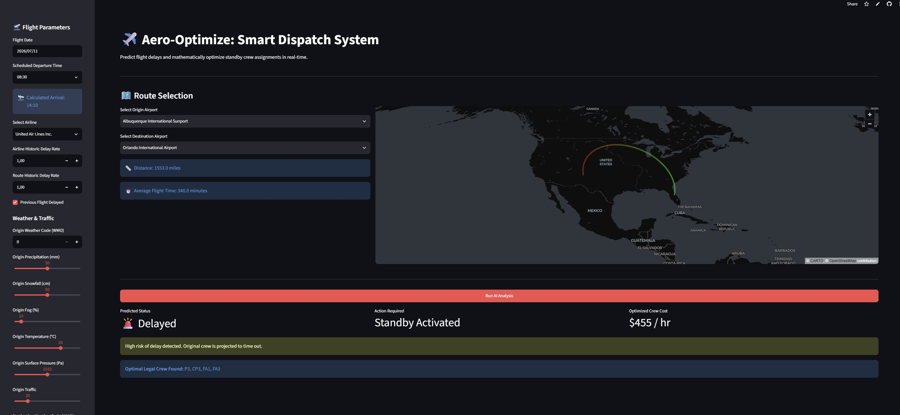
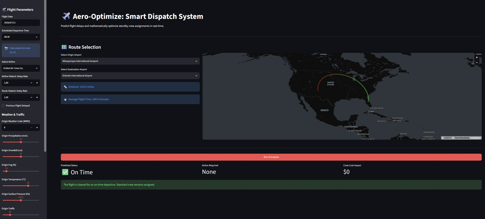
Developed a comprehensive, two-phase data science solution for the aviation industry designed to mitigate the impact of flight delays. The project bridges the gap between predictive analytics (forecasting when delays will occur) and prescriptive optimization (calculating the mathematically optimal business response). The final product is a production-ready, full-stack web application hosted in the cloud that allows dispatchers to dynamically reassign flight crews during disruptions, balancing operational efficiency with strict regulatory constraints.
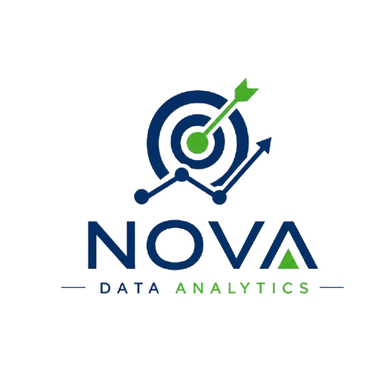
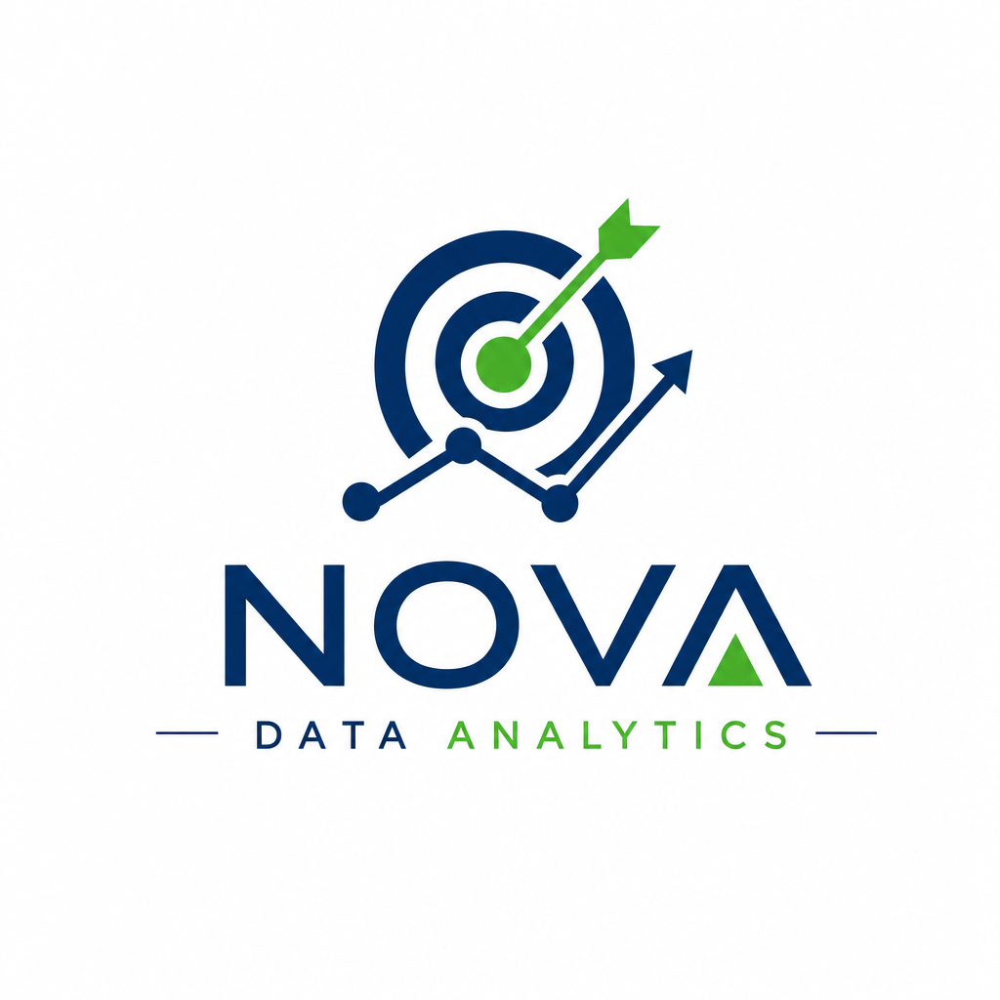
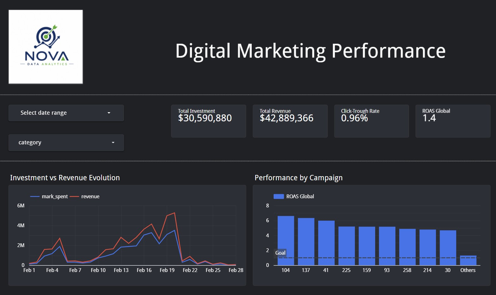
Developed a comprehensive, cloud-based data pipeline and interactive analytics dashboard to evaluate digital marketing campaign performance. The project spanned the entire data lifecycle: migrating raw data from a local database to the cloud, performing mathematical transformations and statistical A/B testing in Python, automating budget-alert scripts, and building an executive-level Business Intelligence tool. The final product allows marketing stakeholders to instantly identify profitable campaigns, track Return on Ad Spend (ROAS), and prevent budget waste.
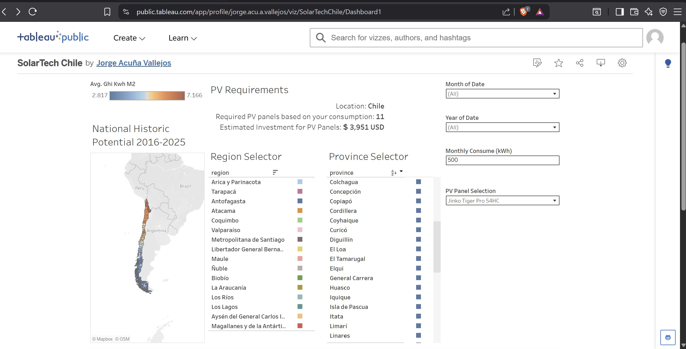
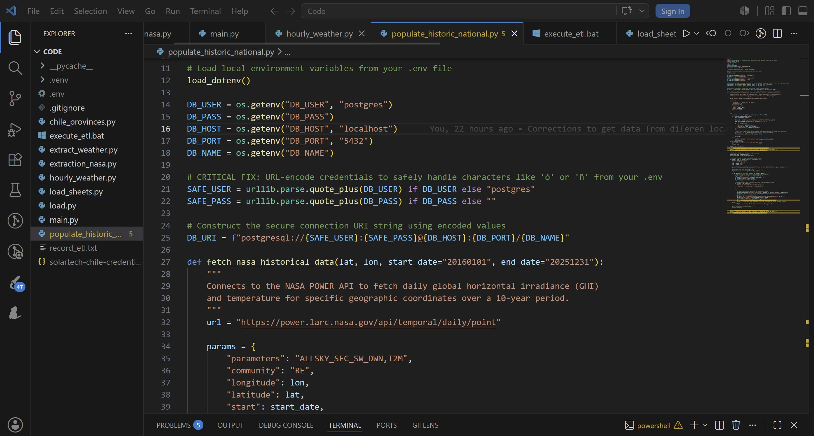
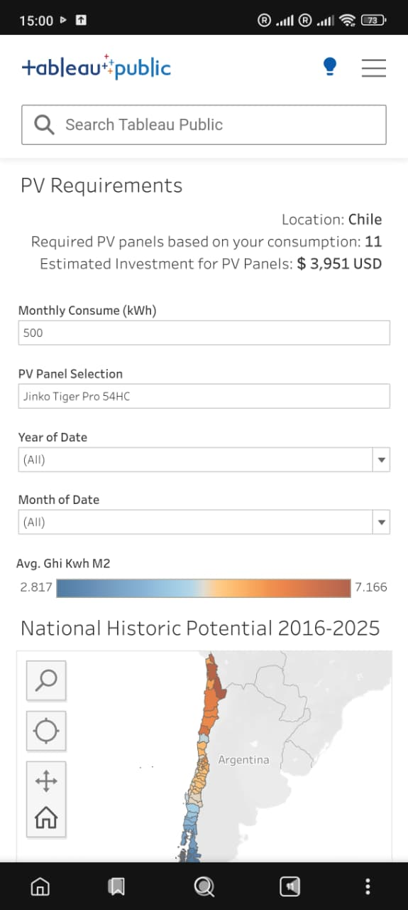
Developed a comprehensive, end-to-end data pipeline and interactive solar energy calculator for the Chilean market ("SolarTech Chile"). The project spanned from extracting raw meteorological data via API and architecting a relational database, to building a dynamic business intelligence tool. The final product allows users to estimate solar panel requirements and financial investments based on their geographic location, historical radiation, monthly energy consumption, and specific hardware choices.
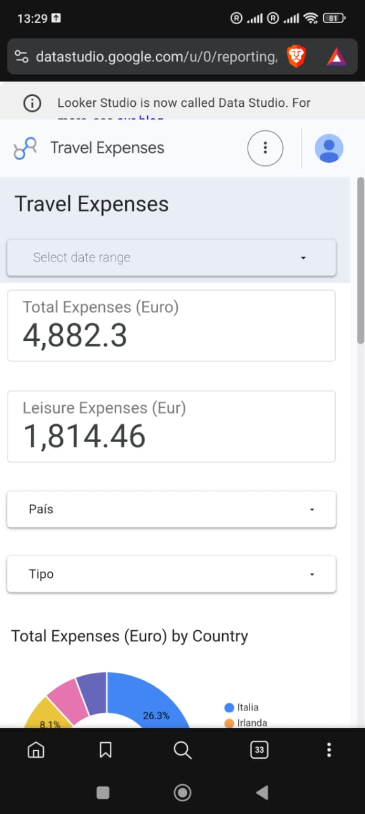
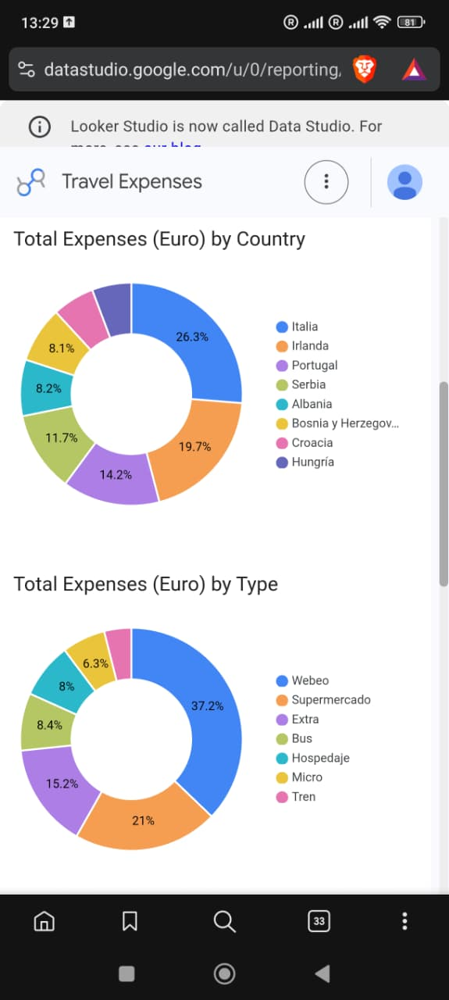
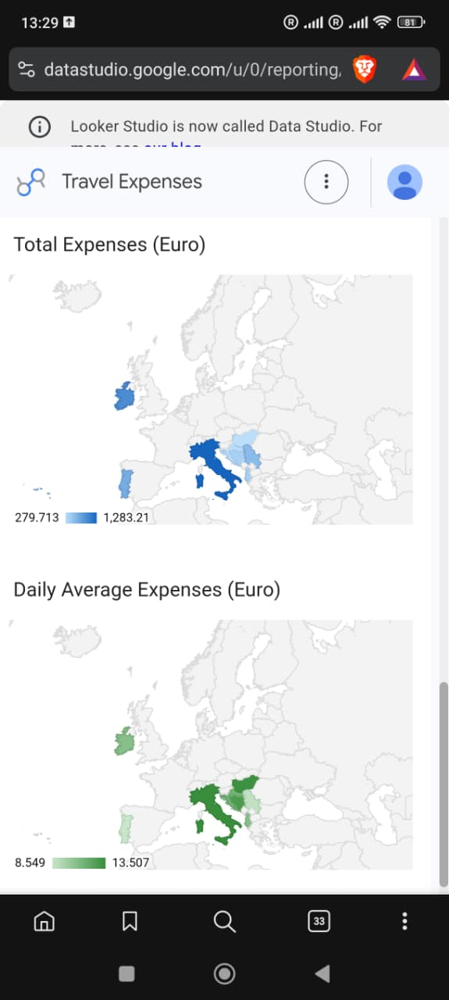
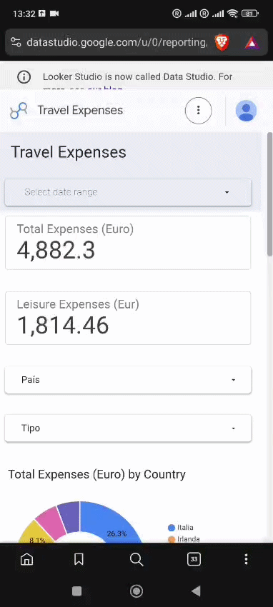
This project focuses on the design, architecture, and deployment of a mobile-responsive data analytics dashboard that functions like a personal finance application. Utilizing Google Sheets as a cloud data warehouse and Looker Studio for Business Intelligence (BI), the system ingests transactional expense logs to deliver interactive, real-time insights into spending habits, categorical distributions, and geographical cost velocities across multi-country travel destinations.